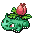
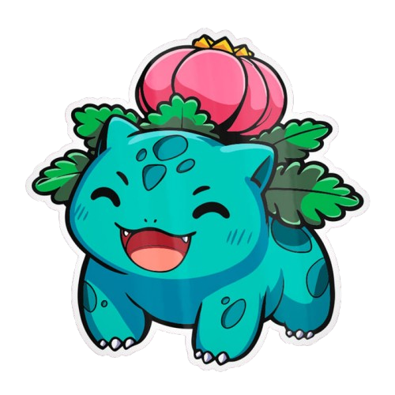

| Altura | Categoría |
|---|---|
| 1,0 m | Semilla |
| Peso | Habilidad |
| 13,0 kg | Espesura |
| Sexo | |
| ♀/♂ |
Vuelve al Inicio
|
|
|---|
Tipo | Debilidad |
|
|---|---|---|
| Planta | Fuego | Hielo |
| Veneno | Volador | Psíquico |
Estadísticas Base |
||||
|---|---|---|---|---|
| PS | ATAQUE | DEFENSA | ESPECIAL | VELOCIDAD |
| 60 | 62 | 63 | 80 | 60 |
|  | Ivysaur fue introducido en la primera generación.
|
|---|
| Velocidad | ⭐⭐ |
|---|---|
| Fortaleza | ⭐⭐⭐ |
| Precisión | ⭐⭐⭐⭐⭐ |
| Resistencia | ⭐⭐⭐⭐⭐ |
| Salto | ⭐⭐⭐ |
| Total - 18 | Media - 3.6 |
| Ataque | Tipo | Poder | Precisión | Descripción |
|---|---|---|---|---|
| Placaje | Normal | 35 | 95% | Embiste con todo el cuerpo |
| Gruñido | Normal | - | 100% | Dulce gruñido que reduce el Ataque del contrincante |
| Drenadoras | Planta | - | 90% | Planta tres semillas que absorben PS en cada turno |
| Látigo Cepa | Planta | 35 | 100% | Azota al enemigo con ramas finas |
| Polvo Veneno | Veneno | - | 75% | Polvo tóxico que envenena al enemigo |
| Hoja Afilada | Planta | 55 | 95% | Corta con hojas afiladas. Suele ser crítico |
| Desarrollo | Normal | - | - | Crece a marchas forzadas y aumenta el At. Esp |
| Somnífero | Planta | - | 75% | Esparce polvo que duerme al enemigo |
| Rayo Solar | Planta | 120 | 100% | Primer turno: abrsorbe luz. Segundo turno: ataca |

|
|

|
|---|---|---|
| Bulbsaur | Ivysaur | Venusaur |